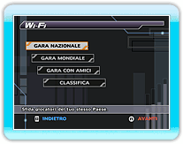
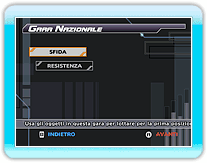
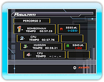
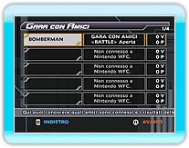
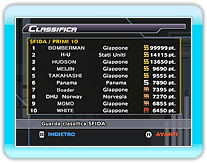

17 |
Nintendo WFC |
 |
|
Seleziona "Nintendo WFC" dal menu principale. Quando ti sarai collegato, sarà visualizzato lo schermo di selezione della modalità Nintendo WFC. Seleziona la modalità Nintendo WFC con cui vuoi giocare e premi
● GARA NAZIONALE
● GARA MONDIALE
● GARA CON AMICI
● CLASSIFICA
Puoi scegliere tra due modalità.
Seleziona la modalità alla quale vuoi partecipare, quindi premi 
● SFIDA
● RESISTENZA
Seleziona un personaggio e l'attrezzatura, poi scegli un percorso per iniziare a gareggiare. Il percorso sarà selezionato a caso tra quelli scelti da tutti i membri. Quando finisce una gara, i tuoi punti aumentano o diminuiscono a seconda della tua posizione in classifica.
● SPAZIO AMICI 
● Gioca con un amico
Se hai gareggiato con amici, i tuoi risultati di gara con ogni amico saranno aggiornati.
● Registra un amico
La tua posizione in classifica è determinata dall'invio e dalla ricezione dei punti in classifica in modalità SFIDA e RESISTENZA o dei tempi di gara in modalità CRONOMETRO.
Selezionando il tipo di posizione che vuoi vedere, verranno visualizzate le prime 10 posizioni per ogni categoria. Puoi anche controllare la tua posizione in classifica e quella dei tuoi amici. La classifica verrà aggiornata automaticamente quando selezioni un tipo di posizione.
*
|
 |
 |
 |